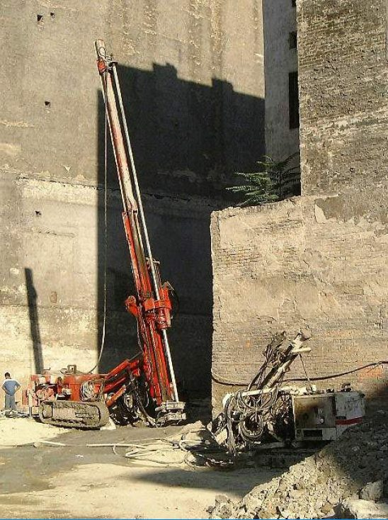
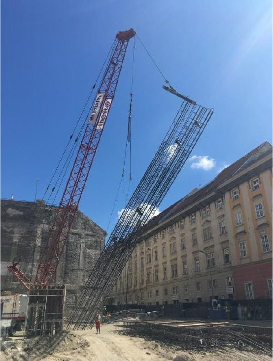
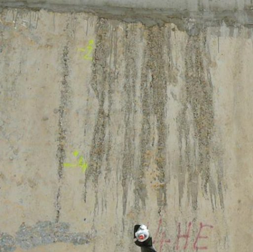
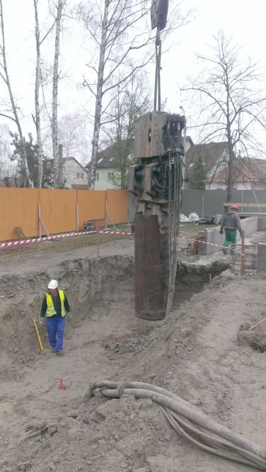

Interactive learning module · BME Foundation Engineering
Deep foundations where a shallow foundation is no longer enough
If the bearing stratum lies deep, if settlement has to be limited, if water could scour the shallow foundation, or a large horizontal force could push it aside, we insert a load-transferring element and carry the loads down to greater depth. This page guides you from piles through diaphragm walls to well foundations. Along the way you can build a pile in 3D, experiment in the labs, and watch the machines and technologies in real footage.
If a shallow foundation is not suitable, a load-transferring element is built in between the structure and the deeper subsoil of adequate bearing capacity. This is the deep foundation – and its most important property is that it can transfer load to the soil not only at its base but also along its side, its shaft.
3main types: piles, diaphragm walls, well and box foundations
2routes of load transfer: base and shaft
6typical reasons why a shallow foundation is not enough
1.1
What is a deep foundation? – base and shaft
A shallow foundation transfers the load at its base: the stress from the load dissipates in the often weak layers below the foundation, and these are compressed. A deep foundation carries the load down to deeper layers of (better) bearing capacity, and along the way, besides its base, it also transfers load to the soil along its shaft by friction and adhesion.
For piles the two load-transfer surfaces have their own names: base (end-bearing) resistance (at the base, by compression) and shaft resistance (along the shaft, by shear). Which of them dominates depends on many factors – this is covered in the next chapter.
Shallow foundation: the load enters the soil only at the foundation level (the bearing surface of the footing) and spreads out in the soil zone a few metres deep below it (except for raft foundations).
Deep foundation: through the base and the shaft the load also reaches deeper layer(s).
1.2
Types of deep foundation
Deep foundations have three main families: pile foundations (slender, long column-like elements), diaphragm wall foundations (a continuous wall in the ground) and well and box foundations (rigid, massive bodies that – like a shallow foundation – transfer the load mainly at their base, only deeper, in the bearing layer; hence they are also called “deepened shallow foundations”). On the boundary between shallow and deep foundations lie the transitional solutions. Today the pile foundation is by far the most common, so it is covered in the most detail (C02–C06); diaphragm walls (C07) and well, box and caisson foundations (C08) each get a chapter of their own. On the 3D section at the top of the page you can also try how a shallow foundation, a pile foundation, a diaphragm wall and a well foundation carry the load down.
Deep foundationa load-transferring element between the structure and the deeper bearing stratum
Slender, individual load-transferring elements; their heads are tied together by a reinforced concrete pile cap, slab or grillage. Today this is by far the most common deep foundation.
Shape, size
Micropiles approx. 10–30 cm, “normal” piles 25 (30)–80 cm, large-diameter piles above 80 cm; length from a few metres to several tens of metres.
Load transfer
At discrete points, at the base (tip) and along the shaft; according to the ratio it is an end-bearing, friction or mixed pile. It can also carry tension and horizontal load.
Construction
Displacement: precast piles are driven, vibrated, jacked or screwed in, or the pile is formed in place with a displacement drilling head or a driven casing (screw pile, Franki pile). Replacement: the soil is drilled out and the hole is filled with concrete. Micropiles are made with a casing or a sacrificial bit.
When do we choose it?
If the bearing stratum lies deep below weak layers, the load is large, the settlement limit is strict, or scour or uplift is a threat.
A continuous, planar reinforced concrete structure – a wall in the ground. The trench is excavated under bentonite slurry, reinforced, then concreted from the bottom up.
Shape, size
Thickness 40–120 cm; a panel is typically 2.8–6.5 (8) m long; depth generally 10–30 m (but it can be 100–120 m).
Load transfer
A strip foundation: the load coming down the wall is transferred at its base and along both faces; meanwhile it also retains the soil and the groundwater.
Construction
Guide walls, then excavation under slurry with a grab or a hydromill (cutter), reinforcement cage, and finally concreting through a tremie pipe.
When do we choose it?
Underground car parks, underpasses, metro stations: where excavation support, a permanent side wall and a foundation are needed at once, also below the groundwater, next to neighbouring buildings.
Example
The stations of metro line 4 in Budapest (a 48.3 m deep diaphragm wall at Fővám tér), city-centre underground car parks.
A larger-diameter shaft wall, open at the top and bottom, sunk under its own weight to the bearing stratum while being excavated from inside, then filled with concrete.
Shape, size
Diameter 0.8–3.0 m, length 4–8 m; a cutting edge at the bottom, and a reinforced concrete grillage or slab connecting the wells at the top.
Load transfer
At discrete points, under individual columns and walls – through its large base area and, to a lesser extent, its shaft.
Construction
Sinking a reinforced concrete shell or well rings with a “clamshell” grab; today a steel casing is more often vibrated down and concreted while it is withdrawn.
When do we choose it?
If the bearing stratum is not too deep, mainly with high groundwater, when the foundation level has to be taken below the water table.
Example
Hall and bridge piers, foundations of older industrial buildings.
The “big brother” of the well foundation: the plan of the box matches that of the structure (e.g. a bridge pier or a whole building). A caisson is a box closed at the top, from which the water is expelled by compressed air.
Shape, size
A large body matching the plan of the structure; 6–8 m is built on top of it in each stage, and in easily excavated soil it can go down as deep as 40–50 m.
Load transfer
As a single large body, mainly at its base (and along its shaft) into the bearing stratum.
Construction
Open box with internal excavation; floated in closed at the bottom and sunk with water; caisson with a pressurised working chamber (at most 3.2–3.5 bar) and airlocks.
When do we choose it?
Under bridge piers in a river bed, where the foundation must reach below the scour depth; rare today, piles have replaced it.
Example
The piers of the older Danube bridges in Budapest; the box of an underground car park in Geneva.
The boundary between shallow and deep foundations is not sharp. It includes the excavated block foundation and two quite different forms of combined foundation: ground improvement with rigid inclusions – this is ground improvement, not a pile foundation – and the piled raft.
Shape, size
Block foundation: a block excavated in cohesive soil, above the groundwater, to a depth of approx. 5–6 m. Rigid inclusions: typically unreinforced concrete or mortar columns under the slab, with a load transfer platform. Piled raft: a thick reinforced concrete raft on piles spaced more widely than in a pile foundation.
Load transfer
The block foundation works mainly at its base. With rigid inclusions, arching develops in the granular load transfer platform: part of the load goes to the inclusions, the rest to the soil between them; negative skin friction develops along the upper part of the inclusions. In a piled raft the pile heads are connected to the raft: the load is carried jointly by the raft at its base and by the piles, which mainly reduce the settlement.
Construction
The block is excavated without support and concreted immediately; the rigid inclusions are not connected to the structure (e.g. the base slab), whereas the piles of a piled raft are.
When do we choose it?
Block foundations for moderate loads and a good layer not too deep; rigid inclusions to reduce the settlement of large, uniformly loaded slabs (hall floors, tanks, embankments); a piled raft for heavily loaded tall buildings, when the raft alone would settle too much but a full pile foundation is not needed.
Example
Block foundations of smaller buildings; logistics halls and tanks on ground improved with rigid inclusions; tall buildings on piled raft foundations (e.g. the Messeturm in Frankfurt).
Today, by far the pile foundation. Diaphragm walls are used primarily for excavation support and less often purely as foundations – in underground car parks they often do both at once. Well and box foundations were the “classic” methods of the last century; because of piles and modern excavation support they are built less and less today.
1.3
When is a deep foundation needed?
Foundation systems have two large families: shallow foundations and deep foundations. Until the end of the last century shallow foundations dominated, but in the past two or three decades deep foundation systems have been playing an ever larger role. We choose a deep foundation when the bearing stratum cannot be reached with a shallow foundation, when the expected settlements of the structure on a shallow foundation are not acceptable, or when a deep foundation gives a more material-efficient, more economical solution.
Why are there more and more deep foundations?
Buildings with ever larger loads and greater sensitivity to settlement have to be founded – for these even a reinforced concrete raft is often not enough, primarily because settlements must be limited. We increasingly have to build on filled, marshy sites. And deep foundation technologies have developed so much that – including the construction time – they are often cheaper overall than a shallow foundation.
1.4
Giants and their foundations
Skyscrapers and towers are the most spectacular cases of deep foundations. Besides the large load, unfavourable subsoil and a strict settlement criterion also often force the foundation into the depth. In the figure below every structure and its foundation is shown at the same scale. Look how deep the foundation has to reach – and notice that this is often decided not by the height (load) of the building but by the subsoil.
Photos
CN Tower, Toronto – 553 m. Its load is transferred to the bearing stratum by a foundation taken down 15 m.Taipei 101 – the loads of the tower are carried down to the deeper bearing stratum by large-diameter bored piles.Large-diameter bored piles in the side of an excavation – the workers next to them give the scale.Drilling tool for a large-diameter pile – piles socketed into rock need a tool like this.Petronas Twin Towers, Kuala Lumpur – 452 m. The bearing stratum lies deep, so the foundation also reaches very deep.Wind turbine – here it is not the size of the load but the tilt of the tower that governs.Offshore wind farm – the towers are mostly supported by steel tubular piles driven into the seabed.
Did you know?
The Burj Khalifa (828 m) is almost twice as tall as the Petronas Towers, yet it stands on piles “only” approx. 43 m long. Under the Petronas, however, excavated reinforced concrete elements (barrettes) longer than 100 m were needed, because there the bearing stratum lies very deep. So the depth of the foundation is set primarily by the soil.
1.5
When water scours the foundation
The water swirls around a bridge pier standing in a river bed: the downflow at the nose of the pier and the horseshoe vortex forming at its foot remove the bed material, and a scour hole develops around the pier. In a flood this can reach several metres within a few hours.
If the pier stands on a shallow foundation and the scour reaches the foundation level, the pier is undermined – one of the most common causes of bridge collapses. That is why river piers are placed on a deep foundation (piles, wells, boxes) reaching below the expected scour depth.
The short 3D animation shows how the scour hole develops around the pier over 46 minutes.
1.6
Parts of a pile foundation
Scheme and load transfer of a pile foundation: the load of the superstructure is distributed to the piles by the pile caps and the grillage, and the piles transfer it to the soil along their shafts and at their bases.
The pile foundation of a new structure has two main parts: the piles, and the cap, slab and/or pile grillage (beam grillage) tying their heads together. The connecting structure distributes the load of the superstructure to the piles and makes them work together.
Superstructure – columns and floors; their load (vertical arrows) is carried down to the foundation by the columns.
Grillage (pile grillage) – reinforced concrete beams between the heads: it ties and stiffens the system and can also take the load of walls.
Pile cap – the reinforced concrete block under the column that distributes the load to the pile group; its top is horizontal, and the pile reinforcement is anchored into it.
Piles – they transfer the load to the soil along their shafts (green arrows) and at their bases (orange arrows).
Bearing stratum – if there is a layer of better bearing capacity, the piles are typically embedded in it.
What else are piles good for?
Foundation of a new structure
The most common role: the foundation structure of a new building.
Underpinning
Strengthening the foundations of damaged buildings, or when, because of alteration or an added storey, the existing foundation can no longer carry the extra load.
Ground improvement
Driven and vibrated piles (e.g. precast reinforced concrete piles, gravel piles) compact the surrounding soil by displacement.
Excavation support
Piles can also form a temporary or permanent earth-retaining structure, a pile wall.
Slope stabilisation
A row of piles reaching through the slip surface holds a slope prone to movement in the long term too.
Anchoring
As tension piles they can anchor a buoyant underground car park, a tank or a transmission tower.
C02Classification
Classification of piles
Of the types of deep foundation (1.2), the pile foundation is covered in the most detail, because today it is the most common deep foundation; the diaphragm wall (C07) and well, box and caisson foundations (C08) get chapters of their own. Pile foundations are load-bearing, column-like steel or reinforced concrete elements placed between the structure and the subsoil, which transfer the loads to the soil layers through their base (lower surface) and their shaft (side surface). This chapter presents the classification of piles. Piles can be grouped in many ways: by how they transfer the load, what actions they carry, what they are made of and how, and how large their diameter is. These criteria do not exclude each other – a CFA pile can be at the same time end-bearing, in compression, reinforced concrete, replacement and of “normal” diameter.
≥ 2/3share of base resistance for an end-bearing pile, of shaft resistance for a friction pile
33–66%mixed (combined) pile
10–30cmmicropile diameter
> 80cmlarge-diameter pile – replacement only
2.1
By load transfer
Piles in compression are classified by how much of the total resistance is provided by the base and how much by the shaft:
End-bearing pile – at least 2/3 of the resistance comes from the base resistance. Along the shaft there are weaker soils (or water), and the pile “stands” in a layer of much better bearing capacity.
Friction (floating) pile – at least 2/3 of the resistance comes from the shaft resistance. There is no layer of better bearing capacity near the base, and the friction resistance of the longer piles dominates.
Mixed (combined) pile – the base and the shaft contribute to the resistance in similar proportions, between 33 and 66 %.
Don’t stop at the top of the good layer!
An end-bearing pile works only if it is socketed into the bearing stratum to an adequate depth. Moreover, loosened, settled or collapsed soil must never remain at the bottom of the bore – it can greatly reduce the base resistance.
2.2
By action
Piles most often carry an axial compressive force: they take the load by compression at the base and by shear along the shaft. Less often they can be in tension – then the load is transferred only along the shaft, in the opposite direction. This happens when a pile group receives such a large eccentric load that some of its piles go into tension, or when the pile is built for anchoring in the first place: against uplift (tanks, underground car parks), or for transmission towers.
Besides the axial load they can also carry a transverse load (earth pressure, braking force, wind load, earthquake), and a pile may even carry a horizontal force only. Then bending and shear stresses develop besides the compressive stress.
Types of action on piles: in compression (end-bearing, friction, mixed, displacement), in tension and horizontally loaded (bending, anchor) piles.
2.3
By material
Reinforced concrete
The most common. It can be cast in place (monolithic) or precast and transported to site.
Timber
Impregnated hardwood. Widely used in the past – structures on timber piles have survived even from antiquity – but very rarely today. Below the groundwater table it is very durable.
Steel, cast iron
Tube or rolled section. Rare in Hungary because it is expensive; more common for temporary purposes, and it can be reused several times.
Granular material
Gravel, crushed stone, slag, crushed concrete, stabilised soil – primarily for ground improvement over larger areas, not for founding individual columns.
2.4
By method of construction
Replacement pile
The soil is removed in some way (bored out – for a CFA pile, for example, the continuous flight auger brings it up), and the resulting hole is filled with the pile material. During construction the surrounding soil may loosen slightly. These piles are always cast in place.
Displacement pile
The soil is not removed: the pile or the drilling tool pushes it aside and compacts it, so no soil comes to the surface. There are two kinds:
precast piles – a finished reinforced concrete or steel element is driven, jacked, vibrated or screwed into the ground; because of the compaction, both the base and the shaft resistance increase;
cast-in-place piles – we drill with a displacement head (screw pile, shown in the figure) or drive down a tube closed with a dry concrete plug (Franki pile), and the hole is concreted in place; for the screw pile, mainly the shaft resistance increases.
2.5
By size
Short pile – approx. 3–5 m long; useful where the bearing stratum is not deep, but a shallow foundation would not yet reach it.
Micropile – approx. 10–30 cm in diameter (the shaft of a bored micropile is at most 250–300 mm, the largest cross-sectional dimension of a driven micropile at most 150 mm). Primarily for underpinning.
“Normal” pile – approx. 25 (30)–80 cm; in this case the diameter is usually not mentioned at all.
Large-diameter pile – above 80 cm; these are made exclusively with replacement technology.
2.6
The pile family tree
Pile technologies are grouped into three families by method of construction: replacement piles (CFA pile, grabbed barrette, large-diameter bored piles), displacement piles (cast-in-place screw pile, precast concrete or steel tube driven/vibrated pile, precast steel screw pile, Franki pile), and micropiles made with a casing and a sacrificial bit. In the diagram they are completed by an “other” group: jet grouting, deep mixing and stone columns, which already lead towards ground improvement. (The complete system of deep foundations, including diaphragm walls and well and box foundations, is shown in section 1.2.) Tap a branch to jump to the relevant chapter. The mark means that a YouTube video with real footage of the technology is also available.
The fate of the soil around the pile depends on the technology. With replacement the soil is removed (bored out) and the hole is filled with concrete – meanwhile the wall of the bore may loosen slightly. With displacement practically no soil comes up: the pile or the drilling head pushes the soil sideways, the grains are pressed together, and the soil is compacted.
Denser soil gives more friction along the shaft. As a result, a precast (driven) pile gains both base and shaft resistance, and a cast-in-place screw pile mainly shaft resistance.
C03Displacement · precast
Precast piles
A precast pile is a finished displacement element: it is made in a factory or yard, and on site it is driven, vibrated, jacked or screwed into the ground. As it is installed, it “pushes” the soil aside, so the surrounding soil is compacted – the shaft resistance increases. As a result, both the base and the shaft resistance of the pile increase. Its drawbacks are that installation involves more noise and vibration, and if rock or a very hard “intercalated layer” is in its way, the pile gets stuck and cannot be taken down to the required depth.
30–40cmside length of the square RC piles used in Hungary (30×30 or 40×40 cm), 4–12 m long
20–22mmaximum length of the cylindrical–conical spun RC tubular pile (D = 25–50 cm)
15–20mtypical element length of steel tubular and H-piles – almost any length by extension
2–4mtypical length of a ground screw – for lightweight houses and stands
3.1
Timber, steel, reinforced concrete
By material, a precast pile can be of three kinds. Each has its own “territory”: timber belongs to the past (and to waterside structures), steel is for temporary and extendable piles, reinforced concrete for durable foundations of high bearing capacity.
Timber pile
Widely used for old buildings and bridges – today only exceptionally, e.g. for environmental and landscape protection reasons, for waterside structures. Its diameter is typically 10–15 cm (at least 100 mm), its length at most 8–10 m, in very soft soil. Only hardwood can be used (robinia, oak, beech, maple), free of insects and fungi, impregnated; when driving, both the tip and the head must be protected.
Below the groundwater table it is very durable; above it, treatment is needed – this way a service life of approx. 100 years can be achieved.
Steel pile
Tubular pile (its end is usually closed with a shoe): most often used in hydraulic engineering; advantageous where there is soft, loose soil near the surface with a dense granular layer below, into which it can “stand”. The rolled H-section is easier to drive and can be taken through harder layers. It is installed by driving and/or vibration. It can be made in almost any length (extended), and can usually be recovered and reused several times – which is why it is more common for temporary purposes.
A single element is typically 15–20 m long. Its drawbacks are the expensive material and the need for corrosion protection: a thicker section, paint or corrosion-resistant steel.
Precast reinforced concrete
Durable, of high bearing capacity. It was used very widely in the last century, but in Hungary over the past two decades modern technologies (CFA, screw piles) have largely pushed it out of the market. In Hungary the typical pile was 30×30 or 40×40 cm square, 4–12 m long (produced in 1 m steps); later round, cylindrical or conical spun RC tubular piles (D = 25–50 cm) appeared, which are much lighter and can be 20–22 m long.
Its drawbacks are the great weight, which makes handling, transport and driving difficult, and the loud noise and strong vibration caused by installation – so its use near structures is limited. Its use is also limited in rock, rocky ground, hard (stony) clay, strongly cemented soil or fill with larger blocks.
Drawing – cross-sections and shapes
Timber Hardwood (robinia, oak, beech, maple), D ≥ 100 mm; at most 8–10 m long, into very soft soil.Steel tubular pile Its end is usually closed with a shoe. A single element is typically 15–20 m long; it can be extended to almost any length by welding.Steel H-section Rolled section: easier to drive, can be taken through a harder layer.Reinforced concrete, square 30×30 or 40×40 cm, with corner bars and links; L = 4–12 m, in 1 m steps, with a shoe.Reinforced concrete, round – spun Hollow tubular pile, cylindrical or conical: D = 50 cm, or 25 → 50 cm. At most 20–22 m long.Reinforced concrete, octagonal Besides round and square, it is also produced with a hollow octagonal cross-section.
A palace on 13 659 piles
In Amsterdam the Royal Palace (the 17th-century town hall) is traditionally said to stand on 13 659 timber piles, and most of Venice stands on forests of piles driven into the water. The secret is the water: below the groundwater table there is no oxygen, so the timber does not rot and lasts for centuries.
Adding storeys to a building on timber piles
When old buildings are surveyed (e.g. for a loft conversion or an added storey – the foundations receive extra load), timber piles often “turn up”. If the groundwater table has dropped in the meantime, the pile heads may have come above it and rotted – this must always be checked before adding load.
Photos – materials
Newly installed timber piles (for environmental reasons)Steel tubular piles, with the driving rigs in the backgroundRolled steel “H” sectionsHollow spun RC tubular piles
3.2
Installation methods
A precast pile can be installed in four ways: by driving, vibrating, screwing or jacking. The method depends on the soil, the type of pile and – more and more often the deciding factor – the surroundings: how much noise and vibration can be tolerated there.
Driving and vibrating
Driving: mechanical (with a drop hammer), pneumatic, steam or diesel hammer – modern self-propelled piling rigs typically use a hydraulic hammer. Vibrating: there are different types of vibrators; ordinary vibration, vibro-driving, or vibration combined with jetting. Vibration can be used in most soil types and causes less noise than driving: with a suitable frequency, friction can be reduced to a minimum.
Jacking and screwing
Jacking: without driving or vibration, “by pressing” – an option in softer soil and only for piles of smaller bearing capacity (mainly for micropiling), but with much less noise. Screwing: the ground screw or the helical pile is rotated into the ground. It is fast, quiet and causes minimal vibration, but its use is limited in hard or stony soil (see 3.6).
3.3
Pile driving – blow by blow
When driving, every blow of the hammer gives energy to the pile, and the soil resists along the shaft and at the base. In a soft layer the pile advances centimetres per blow, but in the bearing stratum the set (the penetration per blow) decreases. The rig operator logs this: the blow count–depth curve of the driving record is the “biography” of the pile.
If the set drops almost to zero, the pile “refuses” and stops – it goes no further. This is good news if it happens in the planned bearing stratum, and bad news if a thin hard intercalated layer stops the pile above it.
Where the pile can get stuck
In rock, rocky ground, hard (stony) clay, strongly cemented soil and fill with larger blocks, driving can be used only to a limited extent – and a single thinner such layer is enough to prevent the piles from being driven to adequate depth. That is why the ground investigation must find these layers too.
Short or long? It must be decided in advance
The length of a precast RC pile has to be chosen before production, based on the ground investigation. If the pile refuses earlier than planned, the excess must be cut off (trimming); if it does not reach the bearing stratum, it must be extended. A steel pile is more flexible in this: it can be extended to almost any length by welding.
Photos – driving and pile trimming
Self-propelled pile-driving rig – the next piles in front of itCrawler driving rig: the leader holds the pile and the hammer verticalSetting up the pile – positioning on the set-out pointPile trimming: the part above the design level is broken backBreaking the head by machine – the protruding reinforcing bars are anchored into the pile capAfter trimming: exposed reinforcing bars for the pile cap
3.4
Vibration – “fluidising” the soil
The vibrator (vibratory hammer) clamped onto the pile generates vertical vibration. If the frequency is tuned to the natural frequency of the soil, the contacts between the grains loosen temporarily, and the resistance along the shaft and below the base drops temporarily to a minimum – friction is reduced to a minimum, and the pile sinks almost under its own weight and the pressure of the machine. Vibration can be used in most soil types; the effect is strongest in granular soil and smaller in cohesive soil.
Vibration combined with jetting
Vibration is assisted by jetting through thin pipes running along the pile. Jetting must be stopped 1–2 m before the pile tip is reached, so that the soil below the base does not loosen; the pile base can later also be grouted through the pipes.
Noise is a problem here too
Vibration causes less noise than driving, but here too the noise is reduced by so-called screening. At start-up and shut-down the machine passes through the low frequencies – at these moments nearby buildings may also resonate.
3.5
Vibration next door
The vibration from pile driving and vibrating propagates through the soil as waves and attenuates with distance. For buildings the peak vibration velocity (mm/s) governs: an industrial reinforced concrete frame tolerates much more than a residential building – and a listed building or one full of vibration-sensitive machines even less.
So on an infill site in a city centre, next to a sensitive neighbouring building, a driven precast reinforced concrete pile is the riskiest choice – there a low-noise, low-vibration technology is needed instead: a bored (e.g. CFA), screw or jacked pile, or a micropile.
Measure, don’t guess
In sensitive surroundings the condition of neighbouring buildings is recorded before piling (photos, crack map), and during the work the vibration velocity is monitored with a vibration meter. If the measured value approaches the limit, the technology has to be changed.
3.6
Ground screw and helical pile
Helical piles and ground screws are steel deep-foundation elements installed into the ground by screwing. They are used to found lightweight structures, often only temporarily: in that case they can be unscrewed and recovered. They are becoming more and more common in Hungary too; they are typically at most 2–4 m long.
They come in two variants. Variant 1 has a smaller bearing capacity and resembles a large screw: the galvanised steel tube ends in a tapered, threaded tip at the bottom, and at the top the U-bracket of the round head plate receives the beam. It can be installed with a small machine or by hand.Variant 2 is the helical pile: a straight steel shaft with a helical plate at its lower end. Its position is set out with a total station, and a rotary head mounted on a small construction machine screws it down.
The two variants On the left, the ground screw of smaller bearing capacity, which resembles a large screw; on the right, the helical pile. Both are installed by screwing, without excavating soil.
← swipe sideways for the steps →
Advantages
Fast installation
Quiet, minimal vibration
No large construction machine is needed
Recoverable (for temporary facilities, e.g. stages, stands)
Can be loaded in both compression and tension (for smaller loads)
No soil excavation or removal is needed
Disadvantages
Limited use in hard or stony soil
Only a smaller bearing capacity can be achieved
Corrosion resistance must be ensured (in many cases with a thicker cross-section)
Applications
Lightweight family houses, outbuildings
Smaller temporary industrial and commercial structures
Lighting columns, advertising boards, road signs
Subsequent strengthening and underpinning of smaller structures
Photos – installation and applications
Installing by hand: with a bar pushed through, two peopleMachine installation with a rotary head mounted on a small excavatorA lightweight house on ground screwsBase frame of a lightweight house standing on ground screwsFoundation of a lightweight building on ground screws
3.7
Test yourself
C04Displacement · cast in place
Franki and screw piles
Soil displacement also works without a finished element. For the Franki pile a casing tube is driven down and the concrete is worked in place by ramming; for the screw pile a special drilling head pushes aside and compacts the soil while drilling, and the concrete is then placed through the drill stem. Both are cast-in-place reinforced concrete piles – and neither brings up any significant amount of soil: it stays in place, only denser.
3tmass of the Franki drop hammer – it rams the concrete plug inside the tube
2–3MNachievable resistance of a Franki pile (2000–3000 kN), with a length of at most 16–18 m
≈ 60cmdiameter of the finished Franki pile from a casing of 46–52 cm
300–700mmdiameter of the drilling head of screw piles; maximum length 18 (20) m
4.1
Franki pile – rammed base, “bulb”
The Franki pile is a driven, “monolithic” concrete pile of high bearing capacity, made with a recovered casing. Most often approx. 1 m of dry concrete is placed in the bottom of a casing tube 46–52 cm in diameter, with 30 mm wall thickness and 13 m long (extendable), and rammed inside the tube with a 3 t drop hammer. Through friction the plug drags the tube down with it – the tube goes down without any soil or water getting into it.
The casing is driven into the bearing stratum. Once the required base depth is reached, the tube is fixed to the driving frame, and the concrete is driven out of it by heavy ramming. When only 30–40 cm of concrete is left in the tube, further batches are rammed out one after another: this forms the enlarged “bulb” at the base. Finally the reinforcement is placed, and with more concrete added and rammed the pile shaft is concreted too, while the casing is continuously recovered.
Between the irregular shaft surface and the soil the shaft friction is high, which is favourable for the bearing capacity; the large “bulb base” significantly increases the base resistance. Because of the soil displacement, the final pile diameter will be approx. 60 cm.
← swipe sideways for the steps →
A disappearing classic
In Hungary it was a widespread foundation method in transport construction (bridges) and for industrial buildings and housing-estate buildings. Because of its considerable environmental impact and low productivity, CFA and screw piling technologies have pushed it out of large-scale industrial use – but an updated version is still used in several countries.
Excavated Franki piles – the bulbs of the bases are clearly visibleAn excavated bulb – the compacted concrete base greatly increases the bearing capacity
4.2
Screw piles
Over the past two decades the bored, cast-in-place displacement screw pile has been gaining more and more ground. At the end of the hollow drill string there is a special drilling head: the rig drives it down while screwing and pushing, and the head pushes aside and compacts the soil around itself – without bringing it up. At the required depth concreting under pressure starts through the drill string, while the string is continuously rotated and withdrawn; finally the reinforcement is placed, with vibration if necessary.
Its advantages are that there is no dynamic effect or noise, and only a little spoil comes to the surface – no need to arrange its removal and disposal. Because of the compaction, its specific bearing capacity is greater than that of a replacement pile of the same size. The rig continuously measures the rate of advance of the drill string during installation and withdrawal, the engine power and the torque needed for rotation, and the concrete pressure during concreting – an automatic record is produced from these data.
← swipe sideways for the steps →
Where does it work well?
It is effective in loose or medium-dense granular, intermediate or weakly cohesive (soft–firm) soil. It is typically used to found moderately loaded industrial buildings and 5–10-storey residential or office buildings; it is economical and fast. Its spread may be limited at most by the lower structural capacity due to the smaller diameter.
Ground engineering companies have developed different drilling heads; they fall into two groups. The diameter of the drilling head is 300–700 mm.
FDP type – smooth shaft
Full Displacement Pile: the displacement head pushes the soil sideways and compacts it; hardly any spoil comes to the surface. It leaves a pile with a smooth shaft, like CFA. Such systems include Omega, Fundex, De Waal and CHD.
Screwsol type – threaded shaft
The screw-shaped head “cuts” a pile with a threaded shaft into the soil: the drill string is rotated during withdrawal too. The threads further improve the contact with the soil.
The drawings of the drilling heads are illustrative sketches; the details differ between systems.
4.3
Side by side
Pile
Construction
Diameter, length
Noise, vibration
Spoil
When is it good?
Driven precast RC
displacement, finished element
30×30–40×40 cm, 4–12 m; tubular pile D = 25–50 cm, 20–22 m
With a bored pile the soil is not pushed aside but removed, and the hole is filled with concrete. This is replacement: the pile is always made on site, with a circular cross-section, of concrete or reinforced concrete, and as there is no driving it is typically quiet and low in vibration.
5.1
The three steps
Every replacement pile can be broken down into the same three steps – the technologies differ only in what tools they use for each step, in what order, and how far the steps are done “at once”:
1
Soil removal
short auger, continuous auger, grab, drilling bucket
The soil is removed with a short or continuous auger, a grab or a drilling bucket, possibly with flushing.
2
Bore stability
casing, bentonite slurry, soil on the auger, not needed
With a casing, with bentonite slurry, with the soil remaining on the auger – or, if the bore stands by itself, without support.
Concreting, then pushing the reinforcement into the fresh concrete – or the other way round: first the reinforcement cage into the bore, then concreting.
The most delicate is the second step. Until the concrete is in place, the wall of the bore is a free surface: if it is not held, it collapses, loosened soil collects at the bottom, and the finished pile cannot do what it was designed for, either at its base or along its shaft.
The bored pile family tree
Click a technology to jump to the relevant part of the chapter.
CFA is a replacement pile: the soil is brought up by the auger and replaced by concrete. When the continuous auger is screwed down, the spoil is only partly pressed out; the rest stays on the auger, and this soil plug supports the bore. Full displacement is achieved by the drilling head of the screw pile, which brings up almost no spoil.
5.2
Soil removal
Short augermainly in cohesive soil; it fills up, is lifted out and spun cleanContinuous augerin any soil – the tool of the CFA pileGrabin any soil; often under the protection of a casingDrilling bucketmainly in granular soil; the bottom of the bucket can be opened
The tools are often combined: at the top, rubble fill is removed with a grab, and below it drilling continues with an auger. In flush drilling the drilling head only breaks up and loosens the soil at the bottom of the bore, and the material is carried out by the flushing fluid.
The short auger and the drilling bucket work in cycles: down, fill, up, empty – and again. The continuous auger, by contrast, penetrates to the full depth in a single pass; the spoil stays between its flights, so no separate bore support is needed.
Keep the base clean!
Loosened, settled or collapsed soil must never remain at the bottom of the bore under the pile: it can greatly reduce the base resistance of the pile. That is why the base is cleaned before concreting (with a drilling bucket, a cleaning bucket, or by exchanging the slurry in a slurry-supported bore).
5.3
Bore stability
One of the most critical parts of pile construction. The wall of the bore can be held in four ways:
With a casing
A steel tube is driven down in parallel with soil removal, preventing the soil and groundwater from breaking in – but moving and extending it is cumbersome and slow. In granular soil the casing always goes ahead of the excavation; below water, the water removed from the bore has to be replaced.
With bentonite slurry
The drilling mud (bentonite slurry) is denser than water: it displaces the groundwater and supports the wall of the bore with its excess pressure. For this, the slurry level must always be kept above the groundwater table.
With soil
For a continuous auger (CFA) the plug of soil remaining on the auger supports the surrounding soil – no separate technology is needed, which is a significant advantage.
Not at all – because it is not needed
In cohesive soil, mainly above the groundwater, for piles that are not too long (approx. 8–10 m), the bore may remain stable for a short time even without support, but it must be concreted immediately after excavation.
If the bore is not held
The bore may collapse: a discontinuity forms in the pile shaft, the required concrete volume increases, and the loosened wall can greatly reduce the shaft resistance. Soil falling to the bottom impairs the base resistance.
Why does the casing need water?
Below the groundwater, removing soil from the casing also removes water. If the water level inside the tube falls below that outside, the difference starts a flow towards the bottom of the tube: the water bursts in upwards at the base, carries grains with it, and loosens the soil exactly where the pile base will sit. That is why the water level inside the tube is kept at least at the outside level.
Slurry and groundwater
Bentonite slurry is denser than water and forms a thin layer of low permeability on the wall of the bore (filter cake), through which its excess pressure is transferred to the soil. For this, the slurry level must be kept above the groundwater table – the details are discussed under diaphragm walls (C07).
5.4
Concreting and reinforcement
The pile can be made in two sequences: concreting – compaction – reinforcement, or reinforcement – concreting – compaction. Concreting can be gravitational or pneumatic (under pressure): through a concreting hopper, through the casing, or for CFA through the drill stem.
Compaction. With a dropped rammer (tamping – not in flowing concrete), or by “re-driving” the casing. In concreting under pressure the placing itself compacts.
The concrete must not segregate or bleed water: segregated concrete leaves a honeycombed, weak section in the pile.
Reinforcement. The reinforcement is either pushed or vibrated into the fresh concrete afterwards (CFA), or, for larger-diameter, longer piles, placed in the bore in advance with concreting afterwards. Spacers ensure the central position and the concrete cover.
Below water or slurry concreting is done through a tremie pipe: the pipe fills from the bottom, the concrete displaces the slurry upwards, and the end of the pipe stays immersed in the fresh concrete throughout.
Concreting hopper above the boreConcreting through the drill stem (CFA)Pushing the reinforcement cage into the finished pile concreteLifting in the reinforcement cage before concreting
5.5
CFA pile – with a continuous auger
One of the most frequently used piling technologies in Hungary: a pile that is quick to build and “efficient”. Its name abbreviates Continuous Flight Auger; in German-speaking countries it is known as the SOB pile, in France as the STARSOL pile. CFA is a replacement pile made with a continuous hollow auger; at the bottom of the auger there is a concreting outlet (with a closing plate).
The hollow auger is screwed down with a piling rig; during installation the soil plug on the auger supports the bore. At the required depth concrete is pumped under excess pressure through the drill stem: the pressure pushes the auger up (with the soil plug on it), which has to be assisted by pulling. During withdrawal there is no rotation, so that the soil around the drill stem does not loosen. Finally the reinforcement cage is pushed into the fresh pile concrete. With special drilling heads it can also be used in very hard soils and softer rocks.
← swipe sideways for the phases →
40–120cmdiameter (40, 60, 80, 100, rarely 120 cm)
22–24mmaximum length – the length of the auger is limited by the mast of the rig
When is it a good choice?
in any soil except loose, flowing soils – in fine sand with particular care
on projects needing many pile diameters and lengths
with variable bearing capacity requirements
on jobs with a short deadline
where noise and vibration are restricted
for founding industrial buildings, 5–10-storey residential or office buildings and medium-span bridges
Main features, limitations
simple machinery, fast drilling
automatic monitoring: a record for every pile
at most approx. 22–24 m long – the length of the auger is limited by the mast of the rig
the reinforcement cage can only be pushed into fresh concrete – difficult for a long cage
if withdrawn too fast, the pile can narrow (necking)
A record for every pile
Modern rigs continuously measure and record the rate of advance of the drill stem during installation and withdrawal, the engine power and the torque needed for rotation, and during concreting the concrete pressure and the volume of concrete placed, and they produce an automatic record for every single pile. This shows afterwards if less concrete reached the bore anywhere than the theoretical volume.
The most typical defect is necking: if the auger is withdrawn faster than the concrete fills the space released, the wall of the bore is pushed into the place of the concrete, and the pile narrows over that section. That is why the concrete must always arrive with a slight excess pressure, in step with the withdrawal – the concrete consumption is typically somewhat more than the theoretical volume.
The depth, concrete pressure and concrete volume can be seen in real time on the rig operator’s monitor
5.6
Cased pile
A technology that can be used even in extreme ground conditions. The casing is continuously sunk and extended – this is what supports the bore – and the soil is removed under the protection of the casing with a short auger or a drilling bucket (with an opening base plate and cutting teeth), possibly a grab. The casing generally, and in granular soil without exception, goes ahead of the excavation. Below water, the water removed from the bore is replaced.
The side wall of the bore is supported by the casing all the way until concreting, so the method can be used safely even in silty soils with high water content. After the reinforcement cage is placed (and extended if necessary), the pile is concreted through a concreting pipe, and the casing sections are continuously recovered together with the concreting. The casing can be recovered (withdrawn during concreting) or permanent (left in the ground, e.g. to protect the pile shaft). Its main field of application is depths and diameters that cannot be reached with other technologies, and high bearing capacity. Its maximum depth is approx. 100 m; in Hungary depths of at most 30–40 m have been used so far.
← swipe sideways for the phases →
80–150(350) cmdiameter – a large-diameter pile of high bearing capacity
≈ 100mmaximum depth; in Hungary so far at most 30–40 m
Field of application
in particularly unfavourable soils (too)
for large diameters of at least 80 cm
for high bearing capacity requirements
Main features
complex machinery
slower drilling than methods using a drill stem
moving and extending the casing is cumbersome
5.7
Bentonite-supported (slurry-supported) pile
The result is very similar to the cased pile, only here the stability of the bore is ensured by the drilling mud, the bentonite slurry. It has spread mainly for large-diameter, deep piles: because of excavation with a drilling bucket and slurry support, the capacity of the rig does not limit the achievable depth. In Hungary it is used mainly for the foundations of long-span bridges.
positioning, pre-drilling, installing the guide tube;
filling with bentonite slurry;
removing the soil with a short auger or drilling bucket to the required depth while continuously topping up the slurry – below the upper guide tube the slurry supports the bore;
cleaning the pile base, placing the reinforcement cage (extending it if necessary), placing the tremie pipe in extended sections;
underwater (under-slurry) concreting up to ground level while the tremie pipe is continuously withdrawn – the concrete displaces the slurry from below;
removing the guide tube.
← swipe sideways for the phases →
80–150(350) cmdiameter – a large-diameter pile of high bearing capacity
≈ 100mmaximum depth – not limited by the capacity of the rig; in Hungary so far at most 30–40 m
Field of application
in any soil
for large diameters of at least 80 cm
for high bearing capacity requirements
Main features
complex machinery, a slurry mixing and cleaning plant is needed
slower drilling
the slurry must be treated after concreting
5.8
Unsupported bore
In cohesive soil, mainly above the groundwater, for piles that are not too long (approx. 8–10 m), the bore may remain stable for a short time even without support – but it must be concreted immediately after excavation. The bore is made with a short auger or a grab; the concrete is placed gravitationally through a hopper.
A body excavated to a depth of 5–6 m and filled with concrete is also called an excavated block foundation or, in Hungarian practice, a “well foundation” – this is already a transition between shallow and deep foundations (“real” well and box foundations are covered in C08).
Water changes everything
The same clay that stands for a while when dry can quickly start to move below the groundwater or at a granular intercalation. If the drilling hits water, the unsupported bore may no longer stand – then a casing or slurry is needed.
5.9
Which one to choose?
CFA
Cased
Bentonite-supported
Unsupported
Diameter
40–120 cm
80–150 (350) cm
80–150 (350) cm
according to the size of the short auger or grab
Length
at most 22–24 m
15–100 m (in Hungary so far ≤ 30–40 m)
15–100 m (in Hungary so far ≤ 30–40 m)
≤ 8–10 m
Soil
any soil except loose, flowing soils; with care in fine sand
even in particularly unfavourable soil
any soil
cohesive soil, mainly above the groundwater
Bore stability
soil plug on the auger
steel casing
bentonite slurry
the soil’s own strength
Concreting
through the drill stem, under pressure
through a concreting pipe, while the casing is withdrawn
Some technologies are neither purely displacement nor purely replacement – yet their result works (also) as a pile. These include the micropile, made with machines that fit through a cellar door, jet grouting, which cuts the soil apart with a jet at a pressure of 350–400 bar, deep mixing, which mixes the soil in place, and the stone column compacted from gravel. With these you can reach under a hundred-year-old apartment block, close off an excavation on an infill site, or make soft soil capable of carrying load.
Piles with a diameter of less than 30 cm are called micropiles; they can be made by driving, drilling, vibrating or jacking. More precisely, micropiles are bored piles with a shaft diameter of at most 250–300 mm, and driven piles whose shaft diameter or largest cross-sectional dimension does not exceed 150 mm. They are slender elements: they transfer the load to the soil and reduce deformations. Their shaft and base resistance can usually be increased by grout injection, and their shaft can have a constant cross-section, a telescopically varying one, or an enlarged shaft or base.
Their material is steel (steel tube, rigid steel element) or another reinforcing material, cement or concrete mortar, or concrete – most often a combination of these: a steel core surrounded by a grouted body.
Their real strength is the equipment: the drilling rig is so small that it fits into a cellar, a place with low headroom or difficult access, and it works without vibration next to the walls of an existing building.
≤ 300mmshaft diameter of a bored micropile (the limit is 250–300 mm)
≤ 150mmlargest cross-sectional dimension of a driven micropile
90–150mmbore diameter of a drilled micropile; the insert is typically a 28–64 mm steel bar
130–180kNresistance achievable even with a hollow-bar grouted micropile
In building rehabilitation
strengthening an overloaded foundation,
deepening a basement level,
taking an increased load (added storey, change of use),
deepening the foundation because of an adjacent new building,
transferring the load because of a cavity opened below the foundation (e.g. a utility tunnel).
Other uses
founding new structures – especially in very heterogeneous soil or rock conditions,
reducing settlements and displacements in soils of low bearing capacity,
taking tensile and compressive as well as cyclic loads, and dynamic loads (e.g. wind load),
anchoring against uplift (tension element: e.g. the slab of an underground car park, a pool below the groundwater).
New loads in a tight spaceThe small drilling rig works even in a cellar with low headroom.Seismic strengtheningInclined, crossing micropiles under the column.Stopping settlementThe load of the existing foundation is carried down to a deeper, better layer.Anchoring against upliftTension elements hold down the slab standing in the groundwater.UnderpinningThe old strip footing is drilled through obliquely from both sides and supported.Excavation supportA micropile wall on a tight site, anchored with an inclined micropile.Slope stabilisationA lattice (crossing) micropile wall through the slip surface.New structure on mixed subsoilIt can be drilled into rock and into blocky or heterogeneous layers too.
How is it made? – the most common types in Hungary
1
Drilled, cased
The micropile is drilled under the protection of a casing. A rigid steel insert, a threaded steel bar (e.g. Gewi) or a steel tube, is placed in the bore: the extended bar is lowered to the bottom of the bore. The bore is filled with cement grout, and the pile is closed with a bearing plate and a closing “cap”. The bore diameter is 90–150 mm, the steel bar typically 28–64 mm.
2
Rigid core bar, drilled and grouted
A hollow, permanent, extendable, ribbed steel core bar with a sacrificial drill bit is drilled down (e.g. Ischebeck Titan). Drilling starts with simultaneous injection of thin cement grout; the core bar is extended, and drilling continues together with the grouting.
3
Jacked
Typically used for the subsequent strengthening of foundations. From an excavated launch pit, a pile tip made from a steel tube welded to a cone is first jacked into the ground with a hydraulic jack, reacting upwards against the foundation or a transfer beam. The pile is extended until the gauge on the jack shows the design jacking force.
Section of a hollow-bar grouted micropile (illustrative figure, thicknesses exaggerated). A cement body forms around the bar, and outside it a rough sleeve of cement-permeated soil.
The hollow-bar micropile
With the hollow-bar micropile, drilling and grouting are done in one pass: the hollow bar is at the same time the drill rod, the grouting pipe and the permanent load-bearing core. The drill bit is lost and the bar stays in the ground. The thin flushing cement grout (w/c ≈ 0.7–1.0) injected during drilling penetrates the soil voids around the bore and cements the surroundings of the bore too; at the final depth a thicker grout (w/c ≈ 0.4–0.5) is injected. This forms a cement body of 20–50 mm around the bar, and outside it a sleeve of cement-permeated soil 30–80 mm thick – the sleeve is “rough”, so the shaft resistance is good.
Resistance and buckling
When calculating the resistance of a slender micropile, the base resistance is neglected: only the shaft works. There are recommendations for the shaft resistance, but the method of construction is decisive, so a load test is justified. Because of the small diameter, the resistance to buckling must be checked separately if the undrained shear strength of the soil layer is cu < 10 kPa.
Bar heads with head plates and nuts – tied into the reinforcement of the reinforced concrete slab.
← swipe sideways for the steps →
6.2
Jet grouting
Jet grouting is a ground improvement method based on the high-pressure injection of binder. The essence of the technology is that the soil or weaker rock is broken up and fragmented by a high-pressure fluid jet through a drill string and mixed with binder, thereby creating so-called soilcrete bodies (columns or panels, walls); the soil is also partly replaced. The breaking up is done by a fluid jet of high kinetic energy, which is mostly the binder itself – usually a water–cement mix. The soil structure is destroyed, and the cement suspension penetrating the resulting gaps sets with the soil to form “soilcrete”. The amount of soil eroded can be controlled by the velocity of the jet.
The cylindrical element is the jet column (jet pile), the planar element formed by grouting is the jet panel. It is classed among deep foundations, but it is versatile: deep foundations of new structures, deepening the foundation level of an existing structure, strengthening foundations – subsequent strengthening and deepening of the foundations of structures, even from inside an existing building –, underpinning, settlement compensation, curtain walls (low-permeability cut-off walls), excavation support, reinforcing soil masses, auxiliary structures for tunnelling, protection against liquefaction.
350–400barinjection pressure
≈ 2.5mmdiameter of the monitor nozzle
25–35cm/minwithdrawal rate
50–100cmsingle-jet column (50–70 cm in clay, 80–100 cm in sand)
≈ 120cmdiameter of a double-jet column
180–200cmpanel made with double jet
Two phases: drilling and grouting
Drilling: a 100–200 mm diameter hole to the required depth, with the help of a drilling fluid. The design of the drilling head (the “monitor”) and the pressure depend on the quality of the soil.
Grouting: starting from the bottom of the hole, the binder (cement grout) is injected into the soil through the approx. 2.5 mm nozzles of the monitor at a pressure of 350–400 bar, while the drill rod is slowly rotated and withdrawn (25–35 cm/min). The surplus cement grout flows back to the surface along the hole.
The equipment: silo, mixer, high-pressure pump, drill rod and nozzle – the drilling rig is small, and the pump plant can stand aside, even in a courtyard.
← swipe sideways for the steps →
The four variants – how many nozzles are “switched on”?
Single jet
Only cement grout is injected into the soil through a single nozzle at 350–400 bar during withdrawal and rotation.
Double jet with air
The cement jet of the same pressure is surrounded by an air shroud at 5–6 bar – this increases the range.
Double jet with water
The soil is broken up by a high-energy water jet; cementation takes place at the same time with a grout jet injected through a separate nozzle.
Triple jet
A water jet shrouded in an air jet breaks up the soil, and grout is injected at the same time through a separate nozzle for cementation.
In double and triple jet, the breaking up of the soil is also assisted by air and/or water. The variant is decided by the number of nozzles switched on and the diameter to be achieved. Usual jet column diameters: 50–100 cm with single jet (50–70 cm in clay, 80–100 cm in sand), approx. 120 cm with double jet; 180–200 cm for a panel made with double jet. The diameter depends on the permeability of the soil: smallest in clay, largest in coarse-grained soil. Intersecting columns can form a continuous wall, and if needed a horizontal slab too.
Jet panel: when we don’t rotate
Not only soilcrete columns but also jet panels can be made: the rod is withdrawn without rotation, using two-sided (two opposite) nozzles – a V-shaped panel is formed. Panels made from neighbouring holes, joined to each other in a V shape, form a watertight curtain wall – with less material than columns.
If the returning grout cannot get out
During grouting, attention must be paid to the free outflow of the excess material – the cement grout returning to the surface. If it becomes blocked along the hole, the pressure builds up in the soil: hydraulic fracturing can occur, and in extreme cases the building or its surroundings may even be lifted by the excess cement.
V-shaped jet panel: made from the holes without rotation, pulled up with nozzles on both sides; adjacent panels meeting each other form a watertight curtain wall.
Jet grouting in the field
Exposed jet panel: pulled up without rotation, with nozzles on both sides.A compact drilling rig on an infill site, at the foot of the neighbouring fire wall.Silo and mixer-pump plant between the apartment blocks.The monitor: the approx. 2.5 mm nozzle on its side.A trial jet at the surface – this is the energy with which it cuts the soil.Excavated jet columns: the varying diameter is clearly visible.Underpinning: an exposed jet column wall under the neighbouring building.Jet columns reaching under the foundation of the old building, in the side of the pit.Jet columns under old masonry.

Continuing from the bottom of the pit: jet grouting at the next level.
6.3
Deep mixing
The deep soil mixing method improves the mechanical properties of soils of low bearing capacity by mixing binder into them. Here the soil is broken up not by a high-pressure jet but by the mixing tool itself – so the size of the element is close to that of the tool, and much more predictable than that of a jet column. The method is used – with the parameters required by the design – to form individual soilcrete piles, a continuous soilcrete wall or 100 % mass stabilisation.
The type of binder depends on the soil to be improved: lime, cement, gypsum, granulated blast-furnace slag and mixtures of these. The binder is released as a suspension (wet method) or as a powder (dry method, mainly in soft soil with a high water content).
1
Column-type deep mixing
A high-performance drilling–mixing rig penetrates to the required depth. Fluid binder slurry is fed into the subsoil through a supply pipe and the drill string, mixing the soil; by slowly, gradually and repeatedly lifting the tool to the surface, the subsoil is mixed over its full depth. The finished soilcrete columns are typically 1.0–1.5 m in diameter, with a maximum depth of 50 m.
2
“Slot-type” deep mixing (CSM)
Cutter Soil Mixing resembles diaphragm walling with a hydrofraise (cutter), but here only binder is introduced into the ground and the local soil is mixed. With CSM a continuous wall reinforced with steel members can be formed; the panels are approx. 50–60 cm wide and 10–15 m deep.
3
Mass stabilisation
The mixing tool can be mounted on a hydraulic excavator with a rotating superstructure, with a mixing head rotating around its axes at the bottom. The mixing head is moved up and down while the binder arrives continuously through the head under high pressure. On average 0.5–0.8 m³ of soil can be mixed per minute; the depth is usually not more than 5 m.
← swipe sideways for the steps →
Advantages
Quiet and vibration-free
Minimal waste: the local soil does not have to be removed
It offers a good option for the remediation of contaminated sites
The work can also be done at low temperatures
The columns and panels can be placed next to each other in any arrangement
It can replace more expensive foundation and ground improvement methods
Binders
lime
cement
gypsum
granulated blast-furnace slag
and mixtures of these – depending on the soil to be improved
The vibro stone column is a tool of mechanical ground improvement: a “pile” of granular material consisting of gravel or crushed stone. In principle it is similar to rammed stone piers, only smaller-diameter columns (piles) of granular material are formed. It is an economical ground improvement solution, can be adapted to the most varied ground conditions and foundation requirements, and is extremely quiet, with low vibration.
The tracked carrier rig guides the bottom-feed (lock-type) depth vibrator over the set-out point and supports itself on hydraulic outriggers. The loader fills the material skip, which travels up along the mast and empties its contents into the lock. The depth vibrator penetrates to the design depth or to the specified soil resistance while displacing the soil sideways; the penetration is assisted not only by vibration but also by hydraulic pressure and compressed air. Once the final depth is reached, the aggregate is gradually released at the bottom, and the depth vibrator penetrates the aggregate several times with an up-and-down movement, pressing it sideways and compacting it. The finished column is ribbed, thicker in the weaker layers. Typical applications are embankment foundations and foundations of industrial floors.
The stone column is stiffer than the surrounding soil, so part of the load concentrates on it; meanwhile it acts as a vertical drain that speeds up consolidation, and in granular soil it also compacts its surroundings. It is not an independent load-bearing element: the stone column and the soil between work together – which makes it a transition towards ground improvement.
← swipe sideways for the steps →
A related solution is ground improvement with rigid inclusions: rigid, typically unreinforced concrete or mortar columns that are not tied into the foundation; instead there is a granular load transfer platform (gravel mattress) above them. Arching in the mattress directs a large part of the load onto the inclusions (the rest is carried by the soil between them), and the inclusions pass it on through shaft and base resistance; along their upper part – where the soil between them settles more – negative skin friction develops. This is ground improvement, a form of combined foundation – not a pile foundation – and a transition between shallow and pile foundations.
a mixing shaft mixes it mechanically with the binder in place
soilcrete column (1.0–1.5 m), wall or mass-stabilised block
improving soils of low bearing capacity, soilcrete walls, remediation of contaminated sites
Gravel pile
a vibrating probe displaces it and compacts gravel into the soil
compacted gravel column (a granular “pile”)
embankment foundations, foundations of industrial floors, reducing settlement, speeding up consolidation
Did you know?
Jet grouting really spread around the turn of the millennium – worldwide and in Hungary too. Since then it has been one of the most important methods for city-centre infill sites: “reaching” under the foundation of the neighbouring house, it underpins, supports and seals against water at the same time – and the small drilling rig gets onto even the tightest site.
C07Deep foundationsA wall in the ground
Diaphragm walls
Imagine a trench 60 cm wide and 30 metres deep, full of a greenish-grey, mud-like fluid – and yet it does not collapse, although groundwater and sand press on it from the side. A diaphragm wall is a wall formed below ground level by reinforcing and concreting such a vertical-sided trench. The trick lies in the fluid: the bentonite slurry holds the trench open until the concrete is in place.
7.1
A wall in the ground
It has been used in Hungary since the 1960s. A diaphragm wall consists of a series of panels: each panel is excavated under the protection of bentonite slurry, then a reinforcement cage is lowered into it and it is filled by underwater concreting. It can be built to great depth, in practically any length and plan layout – in return it needs expensive, special equipment, so it is an expensive technology.
It is most often encountered as earth retention: as the boundary of an excavation next to an existing building where watertightness is also needed, or where the diaphragm wall also becomes the side wall of the permanent structure (underground car park, underpass, tunnel). Less often, shorter barrettes are made, like piles, purely as foundation elements – but per unit the pile is usually cheaper.
40–120cmwidth of the trench (40–(50)–60–80–100–120 cm)
2.8–6.5(8) mplan length of a panel made at one time
10–30musual trench depth
100–120mthe trench can be this deep too
What is it used for?
lateral support of excavations (retaining structure),
permanent side walls of underground car parks and underpasses,
deep foundations (barrettes, load-bearing diaphragm walls),
cut-off walls: preventing seepage under dams, enclosing contaminated sites afterwards,
riverbank walls, slope stabilisation.
7.2
Construction step by step
Excavation can be staged – first every second (primary) panel is made, and only then the ones in between (secondary) – or continuous, building the panels one after another. Concreting, however, is always done in sections: the panels are bounded by stop ends (a plank or a tube). The six steps of staged excavation:
← swipe sideways for the steps →
The guide wall – the “template” of the diaphragm wall
The two reinforced concrete beams built on both sides of the trench near ground level are the basis of the whole job. Their width is 20–25 cm, their height 1.0–1.5 m; they can be straight walls or L-shaped with an outward-projecting toe. The two beams are usually propped against each other with struts, so they have to be designed as continuous beams. Their tasks:
protecting the edge of the trench, e.g. against the action of the excavating rig,
supporting the loose upper soil,
preventing slurry leakage in loose, filled soil,
guiding the excavating tool,
reference base for setting out,
guiding the slurry when it is pumped out and in.
a) L-shaped beam: the outward-projecting toe keeps it stable even on loose upper soil.b) Straight beam: two reinforced concrete walls propped against each other.
A completed pair of guide walls – the gap between them is the future trench.
Excavating the soil: grab or cutter
Diaphragm wall grab (clamshell)
A rig with a rigid rod (Kelly) or suspended on ropes, with hydraulic or mechanical (rope) power transmission. The work is cyclic: lowering – bite – lifting – emptying – lowering again. A bite is typically 2.8 m long: this is the open width of the grab, and also the shortest panel that can be excavated.
Hydrofraise (trench cutter)
A reverse-circulation cutting machine: counter-rotating cutter wheels break up the soil, which is pumped out together with the bentonite slurry; outside they are separated, the slurry is cleaned and returned to the trench. It can be used to great depth, in any soil and even in rock, and gives a more accurate, neater surface – but it is very expensive.
The diaphragm walls of metro line 4
In Hungary the hydrofraise has so far been deployed in the construction of metro line 4 in Budapest: a diaphragm wall was built 40 m deep at Szent Gellért tér and 48.3 m deep at Fővám tér, right next to the Danube.
Diaphragm wall construction in pictures
Rope-suspended diaphragm wall grabGrabs: the width of the open grab gives the length of the biteThe grab rises out of the slurry-filled trenchHydrofraise on siteCutter wheels with teeth – they work in rock tooThe two counter-rotating wheels direct the cuttings to the centreSlurry treatment plant: mixing, storage, cleaning
Stop end and reinforcement
Stop end
Before concreting, stop ends (planks or tubes) are lowered at both ends of the primary panel. They mark the boundary between panels, make room for installing the swelling waterstop (which will seal the joint between the panels), protect the finished panel during the next excavation, and guide the excavating tool.

Reinforcement cage
The reinforcement cage, assembled as a grid and sufficiently stiffened with diagonal bars, is usually lifted into the trench in one piece by crane. The conditions for lifting are the structural design of the cage, the built-in auxiliary members, the lifting and fixing elements and handling according to the lifting plan – lifting a 20–30 m cage is a serious crane operation.
7.3
Bentonite slurry
The special “raw material” of the diaphragm wall is a mixture of water and bentonite dispersed in it, the bentonite slurry. Bentonite is a very fine-grained colloidal clay consisting predominantly of montmorillonite. Only activated “Na” bentonite can be used for trenching; the viscosity of the slurry can be increased with CMC (a cellulose derivative).
The slurry does two things at once: it prevents groundwater from flowing in, and it counterbalances the water and earth pressure acting on the side walls of the trench. Mixing it requires a separate mixing and settling “plant” on site: this is where it is made, where it rests, and where the slurry displaced or pumped out of the trench returns for cleaning.
1.03–1.12g/cm³density of the slurry during trenching
≥ 1.0–1.5mhow far the slurry level must be above the groundwater table
A jelly that flows
Bentonite slurry is thixotropic: at rest it sets like a jelly, and when stirred or pumped it flows again. At the wall of the trench part of the water seeps into the soil, and the bentonite platelets deposit a thin, almost impermeable filter cake on the surface – through this the slurry transfers its pressure to the soil grains.
← swipe sideways for the figure →
1Cutter wheels – they break up the soil at the bottom
2Suction pump – draws up the soil-laden slurry
3Desander – separates the soil grains
4Tank – storage for the cleaned slurry
5Centrifugal pump – returns the slurry to the trench
6Separated soil – for removal
7Centrifugal pump – pushes the fresh slurry into the tank
8Bentonite mixer – the fresh slurry is made here
9Bentonite silo – storage for the bentonite powder
10Adding water to the mixer
The slurry cycle in hydrofraise trenching: the soil-laden slurry (brown) taken from the trench is cleaned by the desander, and the cleaned and fresh slurry (greenish-yellow) returns to the trench from the tank – so the slurry level in the trench can be kept above the groundwater table throughout.
7.4
Trench stability – why doesn’t it collapse?
Trench stability decides how long a panel can be excavated at once. The minimum length is 2.8 m – one bite of the grab. It is influenced by the soil, the groundwater level, surface loads, the depth of the trench, the guide wall, the quality of the slurry and the length of the trench.
The wall of the trench is pressed by groundwater and soil from outside, and by the slurry from inside. The slurry pressure must balance the water pressure and the earth pressure together. As the slurry is only slightly heavier than water, “winning” needs a head advantage: the slurry level in the trench must always be at least 1.0–1.5 m above the groundwater table.
Pressures on the right-hand wall of the trench: from inside the slurry pressure (σp, drawn to the left), from outside the water pressure (σv) and the earth pressure (σx). For a panel of finite length, σx falls short of the Rankine value because of arching. Illustrative numerical example: sand, φ = 32°, γ = 18 kN/m³ (below the groundwater table γ′ = 10 kN/m³), h = 2.0 m, t = 0.5 m, ρ = 1.08 g/cm³ (γb = 10.8 kN/m³), L = 5.6 m, trench depth 20 m.
σp = (z − t)·γbslurry pressure – z: depth below ground level, t: depth of the slurry level, γb: unit weight of the bentonite slurry
σv = (z − h)·γvwater pressure – h: depth of the groundwater table, γv: unit weight of water (≈ 10 kN/m³)
The condition of equilibrium
The trench stands at every depth if σp ≥ σv + σx. In the example, at the bottom a slurry pressure of 211 kPa faces 199 kPa of water and earth pressure – with Rankine earth pressure (246 kPa) the trench would collapse. The difference is provided by arching.
Silo effect: the earth pressure does not grow indefinitely
For a long, plane wall the earth pressure increases linearly with depth (Rankine). A panel, however, is of finite length: at both ends of the panel the soil wedge that “wants” to move leans on the adjacent soil at rest, and arching develops – as in a grain silo, where because of wall friction the pressure does not grow indefinitely even at the bottom. So the earth pressure tends to a limit with depth. The most commonly used expression for this is the Schneebeli formula (but many others exist):
σx = L·γsin 2φ·Ka·(1 − e−z·sin 2φ / L) − ctan φ·(1 − Ka)L: trench length · γ: unit weight of the soil · φ, c: shear strength parameters · Ka = tan²(45° − φ/2). At small depth it gives back the Rankine value Ka·γ·z − 2c·√Ka, at great depth the earth pressure (for c = 0) tends to L·γ·Ka/sin 2φ.
The point in one sentence
Shorter panel → stronger arching → smaller earth pressure → more stable trench. That is why a panel of arbitrary length cannot be opened, and why 2.8–6.5 (8) m is the typical panel length.
If the slurry level drops…
A sudden loss of slurry – if the slurry leaks, for example, into a coarse gravel layer, an old sewer or a cellar – can reduce the level difference relative to the groundwater within minutes. Then slurry must be topped up immediately, which is why there is always a reserve at the plant. You can try what happens with the slurry level slider of the lab.
7.5
Concreting, inspection
Concreting follows the rules of underwater concreting, with a concreting hopper and a tremie pipe: the concrete fills the trench from the bottom up while displacing the lighter slurry – the slurry is pumped out and returned to the plant. The end of the tremie pipe is always immersed in the fresh concrete, so the concrete does not mix with the slurry.
← swipe sideways for the figure →Underwater concreting: one concreting pipe (tremie) goes into a bored pile and two into a panel; the concrete fills the bore or the trench from the bottom. The head, concreted up to the casting level and mixed with slurry, is broken back to the cut-off level.
The rules of concreting
Concreting must start as soon as possible after excavation is finished, but no later than 4–5 hours afterwards.
Before that, base cleaning is needed: the soil and sand grains settled at the bottom of the trench must be removed.
Continuous concreting is required, without interruption.
The top approx. 30–50 cm of the wall is mixed with slurry; it must be broken out, chiselled and re-concreted – the capping beam sits on it.
After the wall is finished, the concrete quality is usually checked by radioactive isotope or seismic testing.
Plan of trench-built structural elements: a panel can be straight, but also T-shaped or cross-shaped.Reinforcement detail: the concrete must also flow between the bars (clear spacing) and reach the required cover everywhere.
What we see after excavation
Concreting on a city-centre infill siteA completed diaphragm wall after excavating the pit

The vertical “streaks” of slurry on the surfaceThe joint between two panelsDefect: inclusion, honeycombingRough, honeycombed surfaceReinforcement of the capping beam on the trimmed wall head
7.6
When yes, when no?
Advantages
a layout that can be varied in any plan shape
high bearing capacity, small settlement
structures can be built that could not be solved economically otherwise, e.g. underground garages
carries both horizontal and vertical loads
no groundwater lowering is needed
any depth, without formwork or strutting
relatively free of noise and vibration
easy to connect to the superstructure, can be load-tested
It is a problem if…
there is rock or very hard clay – then it can only be built with a hydrofraise
old building remains or utilities turn up in the panels
there are cavities or cellars
trench stability can only be ensured with great difficulty: soft clay, peat, flowing (submerged) sand, very high groundwater table
Wall and foundation in one
For a city-centre underground car park the diaphragm wall works three times: during construction it supports the excavation and keeps out the groundwater, later it becomes the permanent side wall of the car park, and it carries the load of the building above it down as a deep foundation. The levels are often built from the top down (“top-down”): the floor slabs are at the same time the props of the wall.
C08Deep foundationsSunk bodies
Well, box and caisson foundations
Before piling rigs flooded everything, deep foundations were sunk: a large reinforced concrete shell was built at ground level, the soil was removed from beneath it from inside, and it slowly descended under its own weight to the bearing stratum. Today it is almost completely being pushed out, but in the last century this was the “classic” deep foundation – the piers of the older Danube bridges in Budapest were built this way too.
8.1
The principle of sinking
The essence of both methods is the same: a reinforced concrete shell wall of varying – even very large – diameter is sunk under its own weight while the soil is removed from inside with a “clamshell” grab. When the required level (the bearing stratum) has been reached, either a base slab is made or the well is completely filled with concrete – the latter is not typical for box foundations.
The body sinks if its weight (plus any ballast) overcomes the friction on the shell and the soil resistance under the cutting edge. Below the groundwater, buoyancy reduces the effective weight. So sinking is a continuous balancing act: the grab also removes the soil from under the cutting edge, and the shell friction is reduced by lubrication or a shoulder offset.
It is typically economical (and competitive with piles) if the bearing stratum is not too deep. It was used most often when the groundwater was high and the foundation level had to be taken below the water table: meanwhile the shell prevents the working space from collapsing.
Excavation in a well foundation: the slewing excavator “picks” the soil out of the inside of the shell with a grab bucket, and the well sinks under its own weight.
G + Gb − U > S + Rvcondition for sinking – G: weight of the shell, Gb: ballast, U: buoyancy below the groundwater, S: shell friction, Rv: soil resistance under the cutting edge
8.2
Well foundations
Well foundations are used to found individual columns or walls: they support the structure at discrete points, and at the top they are tied together and capped by a reinforced concrete grillage or a reinforced concrete slab – similarly to the way piles are tied together by the pile grillage.
a larger-diameter ring wall open at the top and bottom: shell wall + cutting edge,
formerly always made of reinforced concrete (not only cylindrical but also conical), today also of steel,
a bottom plug at the base, lean concrete fill inside,
it could be made in one piece over its full length, or from precast elements, well rings,
the shell friction can be reduced with bentonite slurry or single-sized rounded gravel.
0.8–3.0mdiameter of the well
4–8mlength of the well
5–6mup to this depth an unsupported excavated bore is also called an “excavated block foundation” or well foundation
Scheme and load transfer of a well foundation
Wells, grillage, superstructurethe top of the grillage is horizontal, the beams have a rectangular cross-section
The load pathcolumn load F → spanning beam (M) → R onto the well → base and shaft resistance
The wells are tied together by a spanning, distributing reinforced concrete grillage (or slab). The columns of the superstructure can also stand between the wells: the grillage carries their load to the wells in bending, and the wells carry it to the bearing stratum.
Variants of well foundations
The shell can be cylindrical or widening downwards (tapered), and it can project all round at the bottom (shoulder offset). In that case the cutting edge cuts a larger hole than the shell above it, so the upper part of the wall does not rub against the soil all the way; thixotropic slurry or rolling gravel can be placed in the resulting gap.
The cutting edge – the “blade” of the well
The lower end of the shell is a tapering cutting edge ending in an edge: this penetrates the soil while the grab removes the soil inside. It can be made purely of reinforced concrete, with steel angle edge reinforcement, or with a protruding steel pre-cutting edge; a cutting-edge ring is often placed around it. The inclination of the inner sloping face from the vertical is at most approx. 35°, and the external shoulder offset reduces the shell friction.
Cutting-edge details in vertical section (outside face of the shell on the left). The dimensions show typical steel sections.
The well foundation today
Today the name well foundation usually refers to excavated foundations with a recoverable steel casing: a steel casing is sunk (vibrated) down while the soil is continuously removed, and after the required depth is reached the casing is withdrawn while the well is concreted through a tremie pipe – by underwater concreting if necessary.
Sinking a well foundation step by step
← swipe sideways for the steps →
The well foundation in practice

Vibrating down the steel casingExcavating soil from inside the casingGrab bucket above the mouth of the casing
8.3
Box foundations
The principle is the same as for the well foundation, but while wells support the structure at discrete points, the plan of the box matches the plan of the structure – for example a bridge pier or a whole building – so it is much larger. Bridges used to be founded this way almost always, the older Danube bridges in Budapest too.
The soil is removed from inside the box, open at the top and bottom, by dredging – below the groundwater by underwater dredging, with dewatering if needed. The box is built and sunk in stages: one stage is 6–8 m. At the bottom there is a larger cutting edge all round, and inside stiffening cross walls divide it into cells. In easily dredged soil it can be sunk as deep as 40–50 m.
There are also boxes closed at the bottom: these are floated into position on open water, then sunk onto the river bed by filling them with water. A box closed at the top is the caisson – see section 8.4.
The open box: a larger cutting edge all round, cross walls inside; the cells are dredged underwater, and the box is built up and sunk in stages of 6–8 m.
The way into the depth of an underground car park in Geneva
Box foundations do not only work for bridges. An underground car park in Geneva was sunk as a box 57 m in diameter, in three stages, down to −28 m, through gravel, sand and silt to the dense, stiff clay. During sinking a thixotropic fluid was injected beside the shell to reduce friction, and at the end the bentonite was displaced by cement grout injection – so no weak, fluid layer remained behind the wall.
The sinking stages of the Geneva box (not to scale horizontally; a narrow section is shown instead of the 57 m diameter).Section of the finished box: seven garage levels down to a depth of 28 m, with the ramp in the middle and two building blocks above ground.
8.4
Caisson – working underwater, under air pressure
The caisson (“bell”) is a box closed at the top: at the bottom there is a working chamber from which the water is expelled by compressed air. Inside, the work was done with small machines and by hand, removing the soil from under the cutting edge. People went down and up through an airlock system – over several hours, so that their bodies could adapt to the change in pressure – and the soil was taken out through another airlock.
The air pressure must be at least as high as the water pressure at the level of the cutting edge: so every 10 m of water depth needs roughly 1 bar of excess pressure. The human body sets the limit: the highest excess pressure used was 3.2–3.5 bar, i.e. approx. 32–35 m below the water level.
It was very dangerous work, harmful to health: many people died during construction and afterwards.
Section of a caisson: compressed air expels the water from the working chamber; people and materials pass through separate airlocks.
3.2–3.5barmaximum excess pressure in the working chamber
≈ 10mapprox. 1 bar of extra pressure is needed per this water depth
2airlocksone for people, one for materials and soil
p ≈ γv·hvthe required excess pressure – hv: depth of the cutting edge below the water level, γv ≈ 9.81 kN/m³; 100 kPa = 1 bar ≈ 10.2 m of water column
Caisson disease
At high pressure more nitrogen dissolves in the blood and tissues. If the worker returns to normal air pressure too quickly, the gas forms bubbles – the result can be joint pain, paralysis, even death. It is the same as decompression sickness in divers. That is why the pressure in the personnel airlock had to be reduced slowly, in stages.
The price of the Brooklyn Bridge
The towers of the Brooklyn Bridge in New York were also built on pneumatic caissons in the 1870s. The chief engineer directing the works, Washington Roebling, himself got caisson disease and lived with severe health damage for years – confined to bed, he continued to direct the construction largely through his wife, Emily Roebling.
8.5
If it tilts…
Even sinking is very difficult: if the soil is removed faster on one side, or the cutting edge hits a harder layer, the box tilts. Tilting can cause irreparable jamming – the body of several thousand tonnes wedges itself into the soil and can go neither down nor back. That is why sinking needs continuous monitoring: the settlement of the corner points is followed by survey measurements, and the dredging locations are adjusted accordingly.
The other danger appears in the surroundings: if the soil under and around the cutting edge loosens – for example because too much is dredged from beneath it – a subsidence crater can form around the box, which can also make neighbouring structures settle.
Three rules for sinking
Always dredge on the side opposite the lower side.
Don’t dredge far under the cutting edge, because the soil loosens.
Measure continuously – a small deviation is easier to correct than a large one.
8.6
Comparison
Well foundation
Open box
Box closed at the bottom
Caisson
Plan
circular, at discrete points under columns and walls
the plan of the structure
the plan of the structure (pier)
the plan of the structure (pier)
Size
Ø 0.8–3.0 m, 4–8 m long
large; down to 40–50 m
large, on open water
at most 3.2–3.5 bar → approx. 32–35 m water depth
How does it get down?
own weight, grabbing inside
own weight, dredging inside, in stages of 6–8 m
floating, then filling with water
own weight, manual and machine excavation under air pressure
The water
kept out by the shell, or underwater excavation
underwater dredging, dewatering if needed
kept out by the closed bottom
expelled by compressed air
At the end
bottom plug or full concrete fill, grillage on top
base slab
filling the inside, rising pier
concreting the working chamber
Today
lives on as an excavated foundation with a steel casing
rare, for special tasks
for harbour and waterside structures
rare today
C09Interactive 3D
3D pile builder
Now you are the piling contractor. Choose a soil profile and a technology, set the diameter and the length – then start the rig! The pile is built step by step in the 3D section, and along the way you find out how it transfers the load, what to watch out for, and what can go wrong.
1 · Site
Four characteristic soil profiles: in some the bearing stratum lies deep, in others there is no outstanding layer at all. The groundwater is at a different level everywhere.
2 · Technology
Eight methods, from CFA through the Franki pile to the micropile. The rigs are simplified; the order and logic of the work phases are real.
3 · Result
The ratio bar shows how much is carried by the base and how much by the shaft – layer by layer. The checklist shows the limitations of the technology.
Try it
Four small tasks
1
End-bearing or mixed?
A CFA pile in profile A: at 13 m it is drilled 3 m into the gravel. Look at the ratio bar, then drag the length to 20 m. When does the pile tip over into “mixed”?
2
Driving in the city centre
A driven reinforced concrete pile in hard clay, next to a vibration-sensitive neighbour. How many red rows do you get? Try the screw pile and the CFA pile here too.
3
A bore below the groundwater
An unsupported bored pile in profile A, where the groundwater is at 2 m. What happens to the bore? Which technology solves it – and why?
4
Withdrawn too fast
CFA in the peaty profile C, withdrawn too fast. Where does the pile narrow, and what does the concrete volume reveal? Then look at the micropile in the same place.
What is the model based on?
Every layer has a unit shaft resistance and a unit base resistance; these are summed over the shaft and the base of the pile. For the displacement technologies a higher value is used because of compaction (for precast piles at both the base and the shaft, for screw piles at the shaft), for the Franki pile the larger base area of the bulb counts, and for the micropile the base resistance is neglected. The classification follows the 2/3 rule. The numbers are illustrative: they help you see what load transfer depends on – the actual design of piles is taught in later geotechnical courses.
Summary
Technologies at a glance
Technology
Construction
Support of the bore
Diameter
Length
Vibration, noise
CFA
replacement
soil plug on the auger
40–120 cm
max. 22–24 m
low
Cased bored
replacement
steel casing
80–150 (350) cm
15–100 m
low
Bentonite-supported bored
replacement
bentonite slurry
80–150 (350) cm
15–100 m
low
Unsupported bored
replacement
none – cohesive soil, above the groundwater
depends on the tool size
max. 8–10 m
low
Driven precast RC
displacement
no bore
30×30, 40×40 cm; spun: Ø 25–50 cm
4–12 m; spun: max. 20–22 m
high
Franki
displacement
recovered casing
approx. 60 cm (tube 46–52 cm)
max. 16–18 m
significant
Screw
displacement
the displacement head
300–700 mm
max. 18 (20) m
no dynamic effect
Micropile
bored, grouted
continuous grouting for hollow bars
bored: ≤ 250–300 mm
adapted to the task
low
Did you know?
The CFA rig automatically produces a record for every pile: metre by metre it logs the depth, the concrete pressure and the volume of concrete placed. If there is less concrete than expected, this points to necking; if much more, the wall of the bore has collapsed or widened somewhere. So the rig’s “log” is also an X-ray of the pile.
C10Decision support · case studies · decision tree
Which one to choose?
There is no “best” deep foundation – only the one that best suits the given site, load and soil. The choice depends on the loads, the depth of the bearing stratum, the groundwater, the surroundings (neighbours, vibration, noise), the available space and finally the economy. In this chapter you decide: you can practise the choice on real situations, a filterable technology matrix and a decision tree.
Loadits magnitude and direction: compression, tension, horizontal force
Bearing stratumhow deep is it, how good is it?
Soilgranular, cohesive, soft, fill, rock
Groundwaterabove or below the bore, the trench, the base?
Surroundingsneighbours, vibration and noise limits, utilities
Spacea big rig or a tight cellar, low headroom?
Time and moneyspeed, machinery, verifiability
10.1
You are the designer!
Nine situations from practice, starting with the city-centre infill site. Each has one best answer: choose, and read why it is right (and why the others are not).
Did you know?
In Hungary the CFA pile has been the dominant piling technology for the past two or three decades: it is fast, low in noise and vibration, and an automatic record of the concrete pressure and the volume of concrete placed is produced for every single pile. Well and box foundations, on the other hand, have been almost completely pushed out today – their place has been taken by piles and modern excavation support.
10.2
Technologies side by side
Switch on the site conditions: the matrix shows which technology is an option, which needs particular care, and which drops out – with reasons. Click the name of a row to jump to the relevant chapter.
10.3
Decision tree
Answer the questions in order: the tree guides you through the most important branches, from shallow foundations to diaphragm walls. The tree is deliberately simple – in real design several variants are compared, and the final word is always given by calculation, load testing and economy.
Remember
Choosing a technology is not a matter of “taste”: a wrong choice (for example a driven pile next to a sensitive neighbour, or unsupported drilling below the groundwater) can damage the surrounding buildings or result in a defective pile with discontinuities. That is why the soil and groundwater conditions must be known at the very start of design.
C115 animations · 13 real recordings
Video library
All the videos in one place. The five explainer animations show the concepts, the load transfer and the mechanics, and the real-site recordings show how the machines work on a real site. In the player Space = pause, F = full screen, Esc = close; you can also page through at the bottom of the animation window.
11.1
Explainer animations
11.2
What to watch when?
A suggested viewing route in the order of the chapters: at each stop the animation gives the principle and the real recording the technology. The buttons start the video directly.
11.3
What it looks like in reality
Real deep foundation footage in English from the Geotech Project YouTube channel (the two short overview clips exist only in Hungarian). Click to open the video here on the page; you can also open it on YouTube at the bottom of the window.
C12sorting game · 40 true/false statements · glossary
Test and glossary
The last pile has reached the bearing stratum too! Now check how much you remember: first a summary video with a quiz, then a sorting game with the pile technologies, and finally 40 statements covering the whole page – from the classification of piles to the caisson. After each answer you get a short explanation, and at the end a searchable glossary helps you revise.
12.1
Warm-up: summary video
The complete map of deep foundations in a few minutes, with quiz questions at the end. If you can answer the video’s questions, the statements below will be no problem either.
12.2
Replacement or displacement?
Now that you have met every technology, sort them by whether the soil is removed during construction or the pile pushes it aside and compacts it.
12.3
True or false?
Decide for each of the forty statements whether it is true. The bar at the bottom shows the result continuously; with the Start again button you can start over at any time.
12.4
Glossary
The most important terms in brief. Search for a word or filter by topic – one click takes you from any term to the relevant chapter.